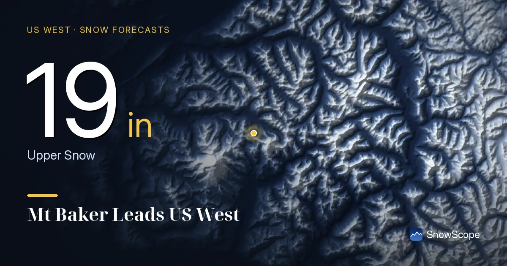
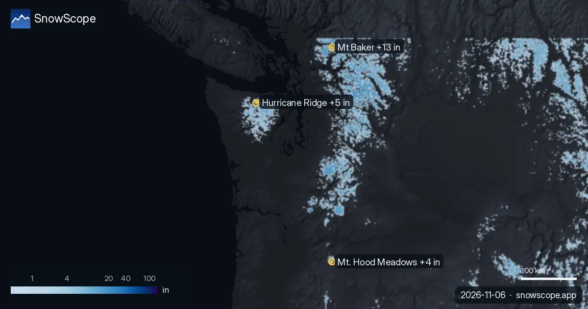

Mt Baker Leads US West: 19 in (47 cm) Upper Snow
Mt Baker stands far ahead of the region with 19 in (47 cm) of upper snow, nearly double Hurricane Ridge and well clear of Mt. Hood Meadows. Our forecast model shows 13 in (33 cm) of new snow arriving through November 9, with the decisive blow arriving on November 8 when a rare drop in the freezing level pushes snow down to lower elevations.
See the live snow forecast for Mt Baker in the SnowScope appSnow depth, powder alerts and the 3D map, free.
Why Mt Baker Leads
Mt Baker holds 19 in (47 cm) compared to Mt. Hood Meadows at 15 in (38 cm) and Hurricane Ridge at 9 in (22 cm). The gap is real. This spread reflects elevation and the mountain's exposure to recent storms. Our model, which ran on November 5, accounts for how snow distributes upslope and what evaporates at lower altitudes.
The nearest weather station—Wells Creek at 4,039 ft (1,231 m)—recorded 5 in (13 cm) on November 1, six days ago. The model estimates are higher on upper slopes because they accumulate snow earlier in the season, before warm air pushes the rain line upward. The model is fresher than the station data and better for forecasting.
| Resort | Snow depth | New snow, 72 h | Coming, next days | Top |
|---|---|---|---|---|
| Mt Baker | 19 in (47 cm) | 11 in (27 cm) | 13 in (33 cm) | 5,105 ft (1,556 m) |
| Hurricane Ridge | 9 in (22 cm) | 2 in (5 cm) | 5 in (12 cm) | 5,446 ft (1,660 m) |
| Mt. Hood Meadows | 15 in (38 cm) | 2 in (4 cm) | 4 in (10 cm) | 7,303 ft (2,226 m) |

The Forecast Snow: Where and How Deep
Mt Baker will add 13 in (33 cm) of new snow through November 9. That snow does not fall evenly. Mid-elevations around 4,365 ft (1,330 m) will gain 6 in (16 cm), and the summit zone above 5,105 ft (1,556 m) will add 9 in (22 cm). The base at 3,629 ft (1,106 m) barely changes, picking up only 0.8 in (2 cm).
November 8 is when most of this arrives: the model shows 10 in (25 cm) that day alone. November 7 brings 2 in (6 cm), and November 9 just 0.8 in (2 cm). That concentration matters for timing your ski day.

November 8: Why the Freezing Level Plummets
The freezing level—the height where air temperature hits zero—controls whether rain or snow falls. On November 6, it ranges from 4,000 to 9,449 ft (1,220 to 2,880 m), which means upper slopes get snow and lower slopes get rain. On November 7, it stays high at 6,890 to 9,055 ft (2,100 to 2,760 m).
But November 8 is different. The model predicts a cold front that crashes the freezing level to 2,723 to 5,610 ft (830 to 1,710 m). At those heights, the entire mountain sees snow, not rain. This rare, sudden drop is what generates the 10 in (25 cm) forecast for Mt Baker on the 8th and explains why the model is confident about that day's accumulation. Without that cold influx, lower elevations would see rain and the advantage would be narrower.
Comparison: Other Resorts Stay Marginal
Hurricane Ridge forecasts 5 in (12 cm) through November 9, with 4 in (11 cm) arriving on November 8. Mt. Hood Meadows receives 4 in (10 cm) over the same period, mostly concentrated above 5,906 ft (1,800 m). The pattern is clear across the region: higher elevations capture snow, lower elevations miss it.
By November 9, Mt Baker will have added 13 in—more than three times what it's forecast to gain at the base—while the other resorts add far less. The gap between Mt Baker and the rest widens significantly during this forecast window, making Mt Baker the only resort with meaningful new cover.
Rocks, Thin Snow, and When to Check Updates
The forecast is based on a single model run from November 5, so there is some uncertainty. Early-season storms can veer off track in the last 24 hours or warm suddenly, turning forecast snow to rain. Measured weather station data is from November 1, now old enough to be less reliable than the model for current conditions.
Even after all this new snow falls, rocks and stumps will still show on runs below 4,265 ft (1,300 m). Early-season snow is thin and can sit unstably over hard ground, old debris, and rocks. Watch for official avalanche bulletins and check the latest forecast update before you commit to a tour or off-piste run.
Tips for skiers
- Head to Mt Baker's mid and upper runs on November 8 or 9, aiming for elevations between 4,265 and 5,250 ft (1,300 and 1,600 m), where the snow gain is highest.
- Expect rocks and stumps on lower slopes and the base area; early-season cover is thin everywhere below 4,265 ft (1,300 m).
- Always check the official avalanche forecast before touring or skiing off-piste. Thin snow on hard ground can slide unpredictably.
- If the freezing level forecast shifts upward in the latest model run, rain replaces snow on lower elevations. Watch for updates.
- Hurricane Ridge and Mt. Hood Meadows will gain snow but remain marginal. Mt Baker is the clear choice for depth through November 9.
About these numbers
Resort snow depths are the deepest snow on the resort's upper slopes from the SnowScope snow model (about 1 km, run of 5 November); they are estimates for an area, not a measurement at one point. Station values are measurements on the date shown. Forecasts can change. Always read the official avalanche bulletin before going off-piste.
Official avalanche bulletins: avalanche.org
Cite this report
For research, teaching or the press: the numbers and charts are free to reuse under CC BY 4.0 with this citation.
SnowScope (2026), Mt Baker Leads US West: 19 in (47 cm) Upper Snow, https://snowscope.app/blog/en/2026/11/us-west-snow-forecast-6-november-2026.html, accessed 2026-11-06
SnowScope (Atlas Labs). (2026, November 6). Mt Baker Leads US West: 19 in (47 cm) Upper Snow. SnowScope snow reports. https://snowscope.app/blog/en/2026/11/us-west-snow-forecast-6-november-2026.html
BibTeX
@misc{snowscope2026uswestsnowforecast6novem,
author = {{SnowScope (Atlas Labs)}},
title = {Mt Baker Leads US West: 19 in (47 cm) Upper Snow},
year = {2026},
month = nov,
howpublished = {\url{https://snowscope.app/blog/en/2026/11/us-west-snow-forecast-6-november-2026.html}},
note = {Published 2026-11-06 20:00 UTC; accessed 2026-11-06}
}· CC BY 4.0 · Methods, data and tools →
Mt Baker: snow and temperature by height, this winter vs last (tools) →
Follow Mt Baker
Free: a message when fresh snow is coming, and the forecast every morning.
More snow reports

Rain will replace snow at Mt Baker on November 6, as the freezing level climbs to 8,957 ft (2,730 m), far above the ski area.

Vail in numbers: a usual peak of about 64 in (162 cm) at mid-mountain over 46 past winters, March the deepest month, plus terrain, access and safety.

Steamboat, Colorado, for families: what works for toddlers, school-age kids, teens and parents, with the snow of 46 past winters at three heights.